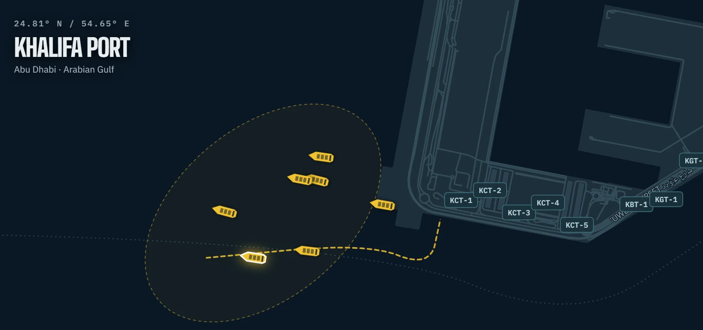
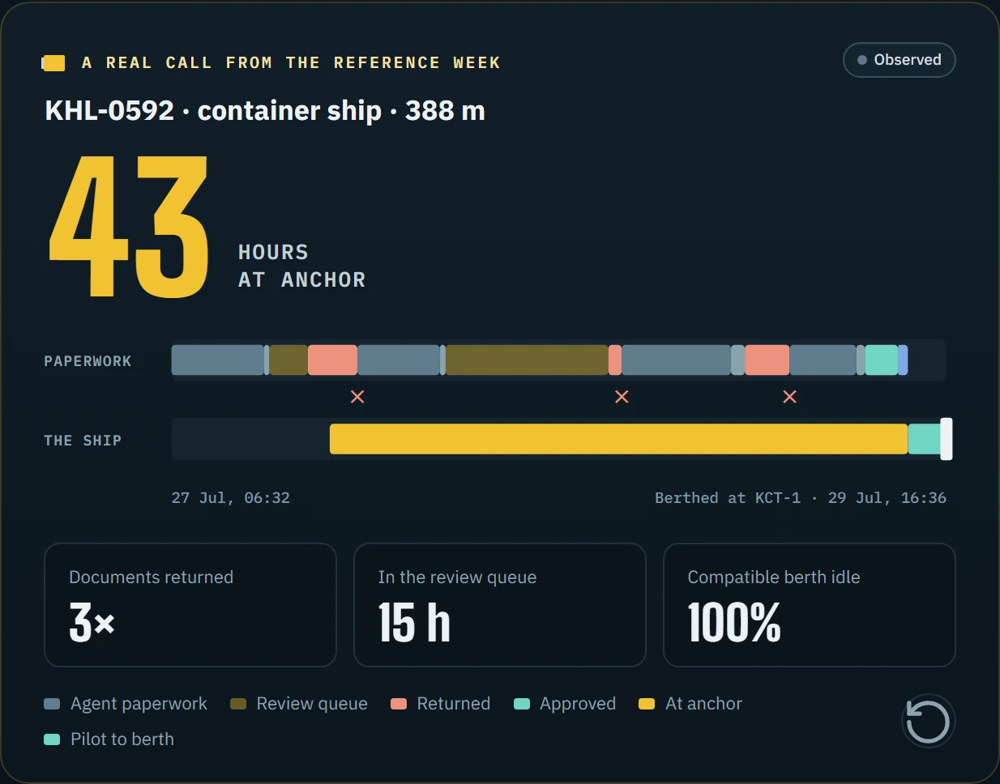

BerthIQ
43 hours at anchor.
CASE STUDY
43 hours at anchor.
A berth that fit
stood idle.
43 hat anchor
3×documents
returned
returned
−28%simulated
wait
wait


Synthetic operations on real port geography · map © OpenStreetMap